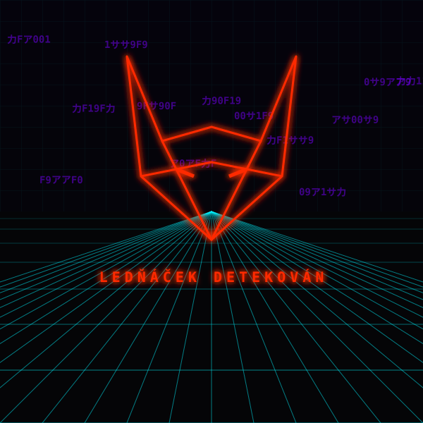

STŘEP KYUUBI · 03:17:09
Netrunnerka ti zapojí kabel do portu za uchem. Padáš do sítě: nekonečná mřížka a data tečou jako řeka.
Kolem střepu se probudí ledňáček, obranný program Kyuubi. Složí se z rudého kódu do obří lišky.
„Zahrajem si hru,“ zasyčí. „Vybereš špatně a spadne ti systém. Vybereš správně a vezmu si tvé loginy.“
Máš jen jednu možnost. Systém, nebo loginy?
